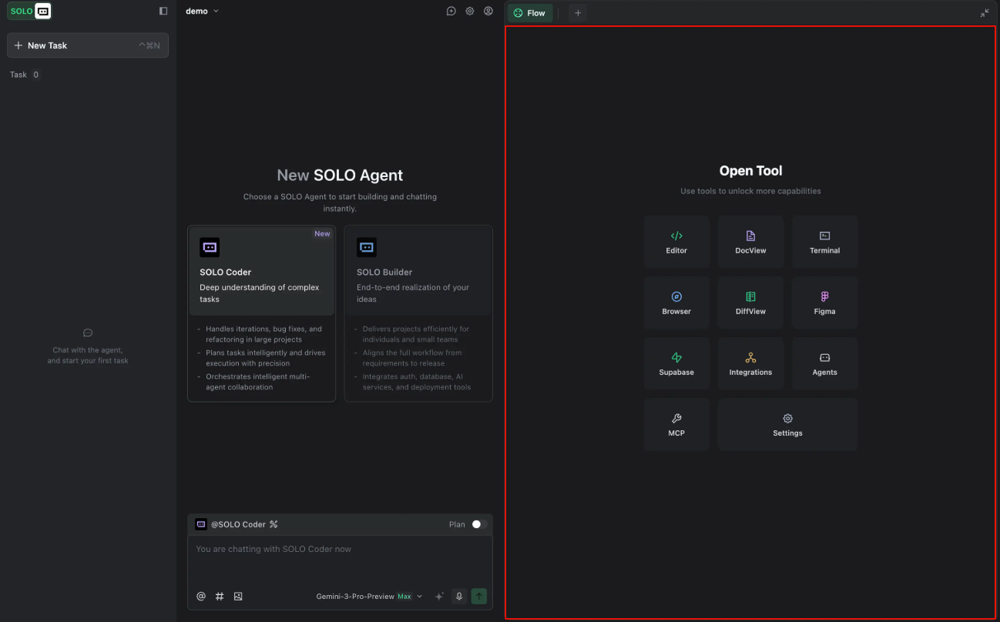

Overview
SOLO mode provides a range of tools, including an editor, documentation viewer, browser, terminal, and more. You can use these tools to expand your capabilities while the AI analyzes and executes tasks in SOLO Builder or SOLO Coder.
Show the Tool Panel
After switching to SOLO mode, you can open the Tool Panel using one of the following methods:
- Show Tools icon - Click the Show Tools icon in the upper-right corner of the interface

The Tool Panel is your central hub for all available tools. Once open, you can switch between tools as needed while the AI is working on your tasks.
Available Tools
During the process of analyzing and executing tasks in SOLO Builder or SOLO Coder, different tools play different roles. Here are all 11 tools available:
| Tool | Purpose | Availability | Notes |
|---|---|---|---|
| Editor | Shows the coding process and final code. Supports manual editing and sending code snippets to AI. | SOLO Builder & Coder | Agent seeks confirmation before destructive operations like file deletion. |
| DocView | Presents drafts and generation process for development docs (PRDs, architecture docs, etc.). | SOLO Builder & Coder | Supports Markdown, manual editing, and AI-assisted editing. |
| Terminal | Displays command execution process and results. | SOLO Builder & Coder | Send output or errors to AI chat for analysis. |
| Browser | Previews AI-built web apps with click-to-edit static text support. | SOLO Builder & Coder | Element selection, deploy, external URLs, console errors. |
| DiffView | Shows code changes: file count, names, line count, and file-level diffs. | SOLO Builder & Coder | Access from Editor via View Diff button. |
| Figma | Convert Figma design frames into code via AI chat. | SOLO Builder & Coder | Premium — not permitted in aiHackathon |
| Supabase | Connect projects to Supabase for frontend/backend management. | SOLO Builder & Coder | Premium — not permitted in aiHackathon |
| Integrations | Third-party services: Deployment, AI providers, Payment. | SOLO Builder only | Premium services require subscription |
| Agents | View built-in agents and manage custom agents. | SOLO Builder & Coder | Access the agent library for task automation. |
| MCP | Manage MCP (Model Context Protocol) servers. | SOLO Builder & Coder | Extend AI capabilities with tools and prompts. |
| Settings | Configure TRAE: Account, General, Development Environment. | SOLO Builder & Coder | Manage IDE preferences and environment config. |
Paid premium features are not permitted during the aiHackathon. This includes Figma AI, Supabase, Payment service integrations, and other subscription-based services. Participants should use free-tier services, local development, and built-in features only (Editor, DocView, Terminal, Browser, DiffView, Agents, MCP, Settings).
Flow Mode
You can enable or disable Flow mode by clicking the Flow button in the upper-left corner of the Tool Panel. When enabled, the system automatically switches tools based on the AI's current work stage and displays real-time progress and output.
How Flow Mode Works
For example, when the AI is generating a product requirement document based on your instructions, the system automatically opens the DocView tool to show the document generation process. When the AI starts coding, it switches to the Editor tool to display the coding process.
During task execution in Flow mode, the tools are read-only and manual operations are not allowed. If you double-click or scroll within the tool, the system will automatically exit Flow mode.
Exiting Flow Mode
If you need to manually intervene or edit content:
- Turn off Flow mode first - Click the Flow button to disable automatic switching before editing
- Double-click or scroll - The system will also exit Flow mode if you interact with the tool directly
If the AI is processing multiple tasks simultaneously, Flow mode applies only to the current task and does not carry over across tasks. Each task manages its own Flow state independently.